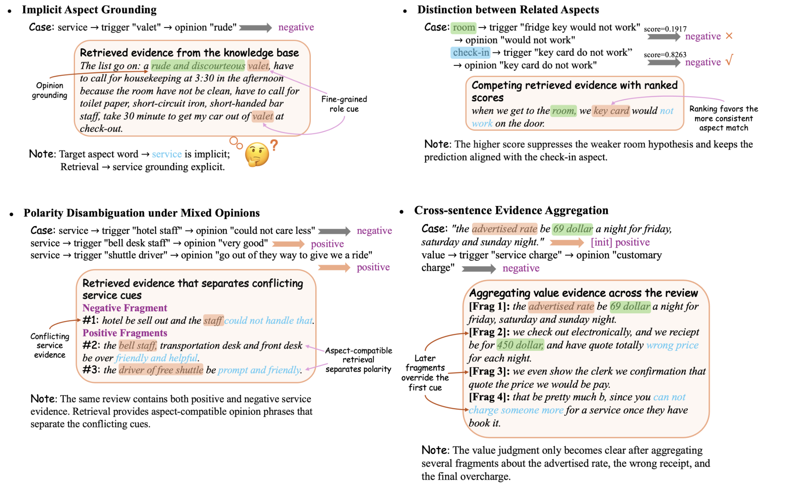

Learning Sentiment Dynamics
Knowledge-Augmented Sequence Modeling for Document-Level Aspect-Based Sentiment Analysis
Abstract
Document-level aspect-based sentiment analysis requires predicting aspect-specific sentiment in long reviews, where evidence is often dispersed, implicit, and affected by discourse-level sentiment shifts. Existing document-level ABSA methods can model long-range interactions, but their evidence and external knowledge are usually encoded in latent representations, making predictions difficult to audit or ground to readable spans. We propose KASM, a knowledge-augmented sequence modeling framework for document-level Aspect Category Sentiment Classification. KASM constructs aspect-conditioned knowledge tuples with LLMs, grounds review fragments through relation-aware contrastive retrieval, and integrates the retrieved evidence into sequence modeling for discourse-level sentiment prediction. The framework is studied on BeerAdvocate and TripAdvisor. Its retrieved evidence paths provide readable associations between aspect cues, opinion phrases, and local polarities. The case studies illustrate implicit aspect grounding, distributed evidence, and conflicting opinions within the same review.
Motivation
Long reviews often discuss multiple aspects at once. A hotel review may praise the location while criticizing the room, service, or check-in process. This makes document-level aspect-based sentiment analysis harder than sentence-level classification, because the model must identify aspect-specific evidence across a long context rather than relying on a single local opinion phrase [1], [2].
Existing approaches address this challenge from different angles. Document-level sentiment preference modeling captures global sentiment tendencies [3], diversified multiple-instance learning aggregates sentence-level evidence for multi-aspect classification [2], and recent instruction-based methods reformulate ABSA as a prompting or instruction-following task [4], [5]. KASM instead emphasizes explicit evidence grounding: the model links review fragments to aspect triggers, opinion phrases, and sentiment polarities before making the final aspect-level prediction.
Method Overview

1. Knowledge Construction
Extract aspect–trigger–opinion–polarity (ATOP) tuples from training reviews. Each tuple connects an aspect to a textual trigger, opinion span(s), and local polarity. Local opinions may disagree with the overall document-level sentiment.
2. Evidence Retrieval
Train a ColBERT-style retriever with sentence–trigger, sentence–opinion, trigger–trigger, trigger–opinion, and opinion–opinion relations. Retrieve an aspect-conditioned evidence path for each sentence, together with its polarity and confidence.
3. Sentiment Dynamics
Encode sentences with FLAN-T5 and DART-style global interaction. Decode a polarity sequence using confidence-guided feedback, then use the final decoder state to attend over sentence evidence for one document-level prediction per target aspect.
How Retrieved Evidence Enters KASM
Polarity feedback
At both training and inference, a retrieved polarity supplies the next decoder input when confidence exceeds 0.50. Otherwise, the model feeds back its own predicted polarity. Learned sentence-position embeddings preserve document order before global interaction.
Auxiliary supervision
Document-level cross-entropy trains the final classifier. A confidence-weighted SmoothL1 sequence loss supervises intermediate polarity estimates at valid sentence positions with positive retrieval confidence. The sequence-loss coefficient is 1.
Confidence prior
The final decoder state queries the contextualized sentence representations. Retrieval confidence adds a prior to attention logits with weight 1 before softmax. Unmatched sentences remain available to attention; padding is masked out.
These are distinct uses of retrieval: feedback selects a decoder input, sequence loss supplies a training target, and the confidence prior adjusts evidence weights.
Evaluation Scope
KASM addresses binary document-level Aspect Category Sentiment Classification on BeerAdvocate (four aspects) and TripAdvisor (seven aspects). Each labeled document–aspect pair receives one negative or positive prediction, even when its supporting sentences contain mixed opinions.
Evaluation covers the full test set and documents containing more than 512 tokens before model input truncation. The manuscript defines this subset using the FLAN-T5 tokenizer. Accuracy and macro-F1 summarize predictions over labeled document–aspect pairs.
This page presents the method and qualitative examples. Numerical benchmark tables are not included in this website revision.
Qualitative Case Study
KASM exposes retrieved evidence paths for inspecting aspect-level predictions. This is especially useful for implicit aspect grounding, cross-sentence aggregation, and mixed-opinion disambiguation, which are common challenges in document-level multi-aspect sentiment analysis [1], [2].

Retrieved evidence and attention weights are inspection aids, not measurements of causal contribution. The figures are illustrative examples, not a live inference interface.
Implicit Aspect Grounding
Example: linking “valet” to the service aspect and grounding it to an opinion phrase, following the need to resolve implicit sentiment cues in ABSA [5].
Cross-sentence Evidence
Aggregating evidence distributed across several review sentences, a core issue in document-level multi-aspect sentiment classification [1], [2].
Mixed Opinions
A review can praise some details and criticize others within the same aspect. Retrieved tuples retain these local polarities; the document classifier produces a single final polarity for that aspect. Tuple counts alone do not define the prediction.
Additional Figures


References
- Yin, Y., Song, Y., & Zhang, M. (2017). Document-level multi-aspect sentiment classification as machine comprehension. Proceedings of EMNLP, 2044–2054.
- Ji, Y., Liu, H., He, B., Xiao, X., Wu, H., & Yu, Y. (2020). Diversified multiple instance learning for document-level multi-aspect sentiment classification. Proceedings of EMNLP, 7012–7023.
- Chen, X., Sun, C., Wang, J., Li, S., Si, L., Zhang, M., & Zhou, G. (2020). Aspect sentiment classification with document-level sentiment preference modeling. Proceedings of ACL, 3667–3677.
- Scaria, K., Gupta, H., Goyal, S., Sawant, S., Mishra, S., & Baral, C. (2024). InstructABSA: Instruction learning for aspect based sentiment analysis. Proceedings of NAACL-HLT, Volume 2: Short Papers, 720–736.
- Fei, H., Li, B., Liu, Q., Bing, L., Li, F., & Chua, T.-S. (2023). Reasoning implicit sentiment with chain-of-thought prompting. Proceedings of ACL, Volume 2: Short Papers, 1171–1182.
- Chung, H. W., Hou, L., Longpre, S., Zoph, B., Tay, Y., Fedus, W., Li, Y., Wang, X., Dehghani, M., Brahma, S., et al. (2024). Scaling instruction-finetuned language models. Journal of Machine Learning Research, 25(70), 1–53.
- Zheng, G., Wang, J., Yu, L.-C., & Zhang, X. (2024). Instruction tuning with retrieval-based examples ranking for aspect-based sentiment analysis. Findings of ACL, 4777–4788.
- Yan, Z., Hsu, W., Lee, M.-L., & Bartram-Shaw, D. (2024). Modeling complex interactions in long documents for aspect-based sentiment analysis. Proceedings of the 14th Workshop on Computational Approaches to Subjectivity, Sentiment, & Social Media Analysis, 23–34.
- Zeng, Z., Zhou, W., Liu, X., & Song, Y. (2019). A variational approach to weakly supervised document-level multi-aspect sentiment classification. Proceedings of NAACL-HLT, 386–396.
- Zhong, Q., Ding, L., Liu, J., Du, B., Jin, H., & Tao, D. (2023). Knowledge graph augmented network towards multiview representation learning for aspect-based sentiment analysis. IEEE Transactions on Knowledge and Data Engineering, 35(10), 10098–10111.